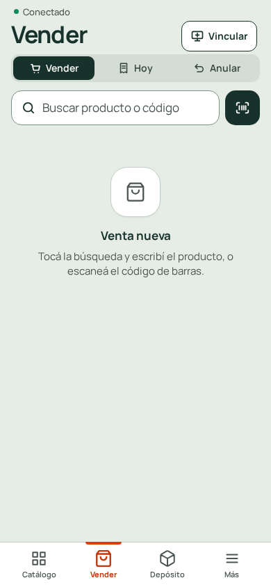
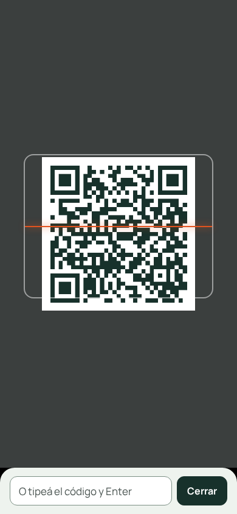
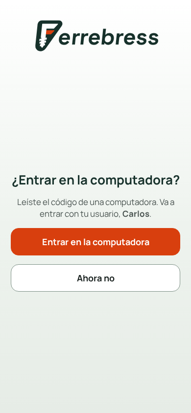
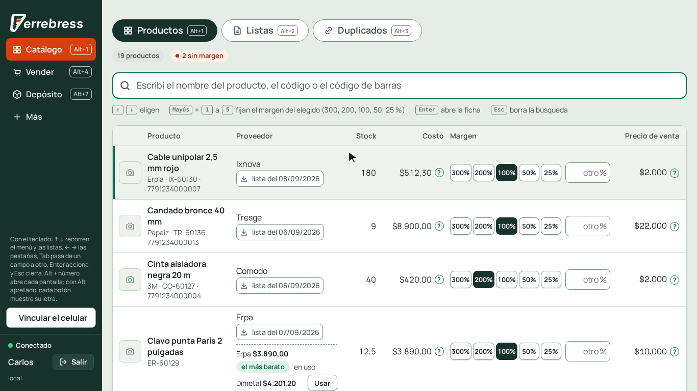
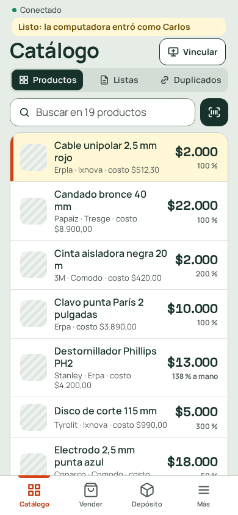
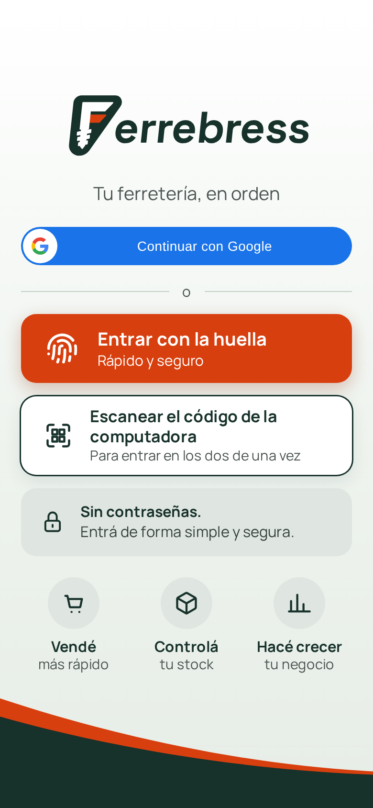
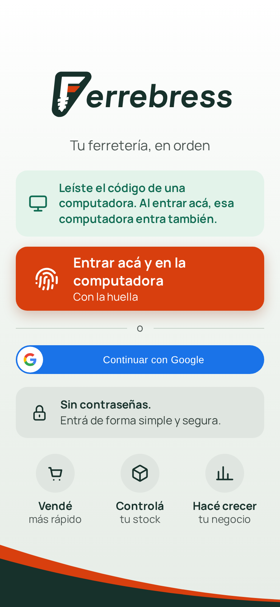
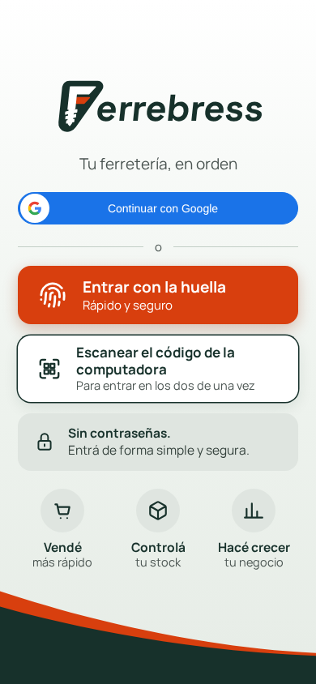
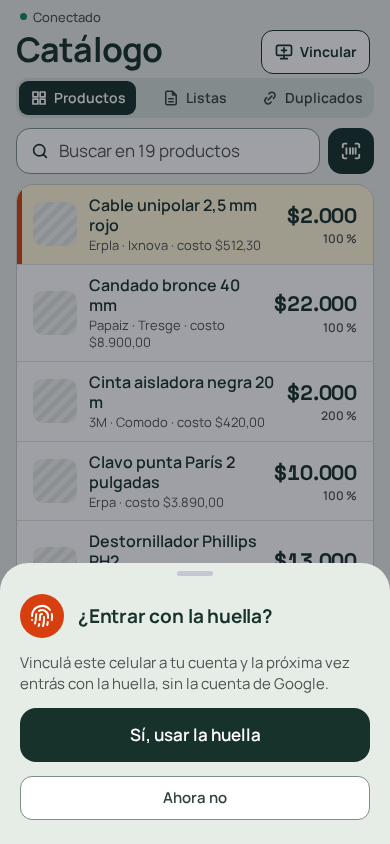
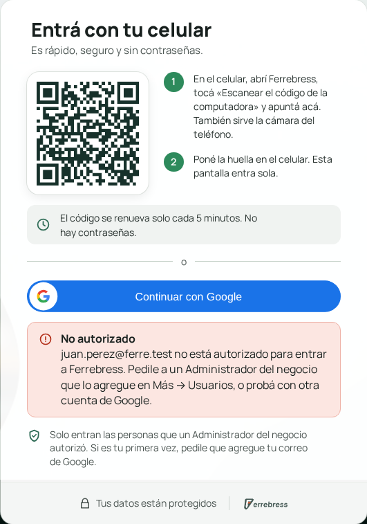

Capítulo 1
Entrar a Ferrebress
Ferrebress no tiene contraseñas. Entrás con el celular, con tu cuenta de Google o con la huella.
Antes de la primera vez: pedile a un Administrador que agregue tu correo de Google en Más → Usuarios. Si no, Ferrebress no te deja entrar.
¿Cuál uso?
Elegí según dónde estés. Tocá una para ir directo.
Entrás una sola vez. Ferrebress se acuerda de vos en ese celular o esa computadora. Te pide entrar de nuevo solo si tocás «Salir» o si pasan 90 días sin usarlo.
En la computadora, con el celular
La computadora muestra un código. El celular lo lee y la computadora entra sola, con tu nombre.
Si en el celular ya tenés Ferrebress abierto
Abrí Ferrebress en la computadora
Aparece el código. No toques nada.
- 1El código que lee el celular.
- 2La otra forma: con tu cuenta de Google.
En el celular, tocá «Vincular»
Está arriba a la derecha, en cualquier pantalla. Se abre la cámara.

1- 1Tocá «Vincular»: se abre la cámara.
Apuntá al código
Apuntá la cámara al código de la computadora. Lo lee solo: no hay que sacar foto.

1- 1Apuntá al código de la computadora: lo lee solo.
Tocá «Entrar en la computadora»
El celular pregunta si dejás entrar a la computadora. Tocá Entrar en la computadora.

12- 1Deja entrar a la computadora con tu usuario.
- 2No la deja entrar.
Listo
En unos segundos la computadora entra con tu nombre. El celular avisa arriba.

1- 1Tu nombre: la computadora entró como vos. «Salir» la cierra.

1- 1El aviso de que la computadora entró.
Si en el celular todavía no entraste
Tocá «Escanear el código de la computadora»
Está en la entrada del celular.

1- 1Tocá acá y apuntá al código de la computadora.
Apuntá al código y poné la huella
Después de leer el código, tocá Entrar acá y en la computadora y poné la huella. Entran los dos a la vez.
Si nunca usaste la huella en ese celular, tocá Continuar con Google.

1- 1Poné la huella: entran el celular y la computadora.
De paso, quedan vinculados. Lo que hacés en el celular aparece en la computadora: si cambiás de pantalla en uno, el otro va a la misma.
En la computadora, con Google
Para entrar sin el celular.
Hacé clic en «Continuar con Google»
Es el botón azul, debajo del código.
- 1Hacé clic en «Continuar con Google».
Elegí tu cuenta
Se abre una ventana de Google. Hacé clic en tu correo, el que te autorizaron.
Si tu correo no aparece, hacé clic en «Usar otra cuenta» y escribí tu correo y la contraseña de Google.
Listo
Ferrebress se abre. Abajo a la izquierda está tu nombre.
En la computadora, con la huella
Solo en una computadora con lector de huella que ya usaste para entrar con la huella.
Hacé clic en «Entrar con la huella»
Está arriba del botón de Google.
- 1Hacé clic en «Entrar con la huella» y poné el dedo en el lector.
Poné el dedo en el lector
La computadora te pide la huella (o el PIN de Windows). Ferrebress entra solo.
¿No aparece el botón? Esa computadora todavía no tiene la huella. Entrá con Google y activala en Más → Configuración, en «Mis celulares con huella».
En el celular, con Google
La primera vez que usás Ferrebress en un celular.
Tocá «Continuar con Google»
Es el botón azul de arriba.

1- 1Tocá «Continuar con Google» y elegí tu cuenta.
Elegí tu cuenta
Google te muestra tus cuentas. Tocá la tuya, la que te autorizaron.
Activá la huella
Ferrebress te pregunta si querés entrar con la huella. Tocá Sí, usar la huella y poné el dedo. La próxima vez entrás más rápido.

12- 1Tocá «Sí, usar la huella»: la próxima vez entrás con el dedo.
- 2Si preferís, «Ahora no»: lo podés hacer después.
En el celular, con la huella
Todas las veces después de la primera.
Tocá «Entrar con la huella»
Es el botón naranja.
 1
1- 1Tocá «Entrar con la huella» y apoyá el dedo, como para desbloquear el teléfono.
Apoyá el dedo
El teléfono te pide la huella, como cuando lo desbloqueás. Ferrebress se abre solo.
Si algo no funciona
| Qué pasa | Qué hacer |
|---|---|
| Dice «No autorizado» | Tu correo no está autorizado. Pedile a un Administrador que lo agregue en Más → Usuarios, o probá con otra cuenta. |
| El celular dice que el código venció | El código cambia cada 5 minutos. Leé el que está ahora en la pantalla. |
| No aparece el código | La computadora no tiene internet. Cuando vuelva, el código aparece solo. |
| No se pudo leer la huella | Probá de nuevo, o entrá con Google. |
| Dice «Este dispositivo no está vinculado» | En ese celular o computadora nunca activaste la huella. Entrá con Google. |
| Dice «Hay que iniciar sesión» | Se cerró tu sesión en ese dispositivo. Entrá de nuevo. |

1- 1El aviso: ese correo de Google no está autorizado.